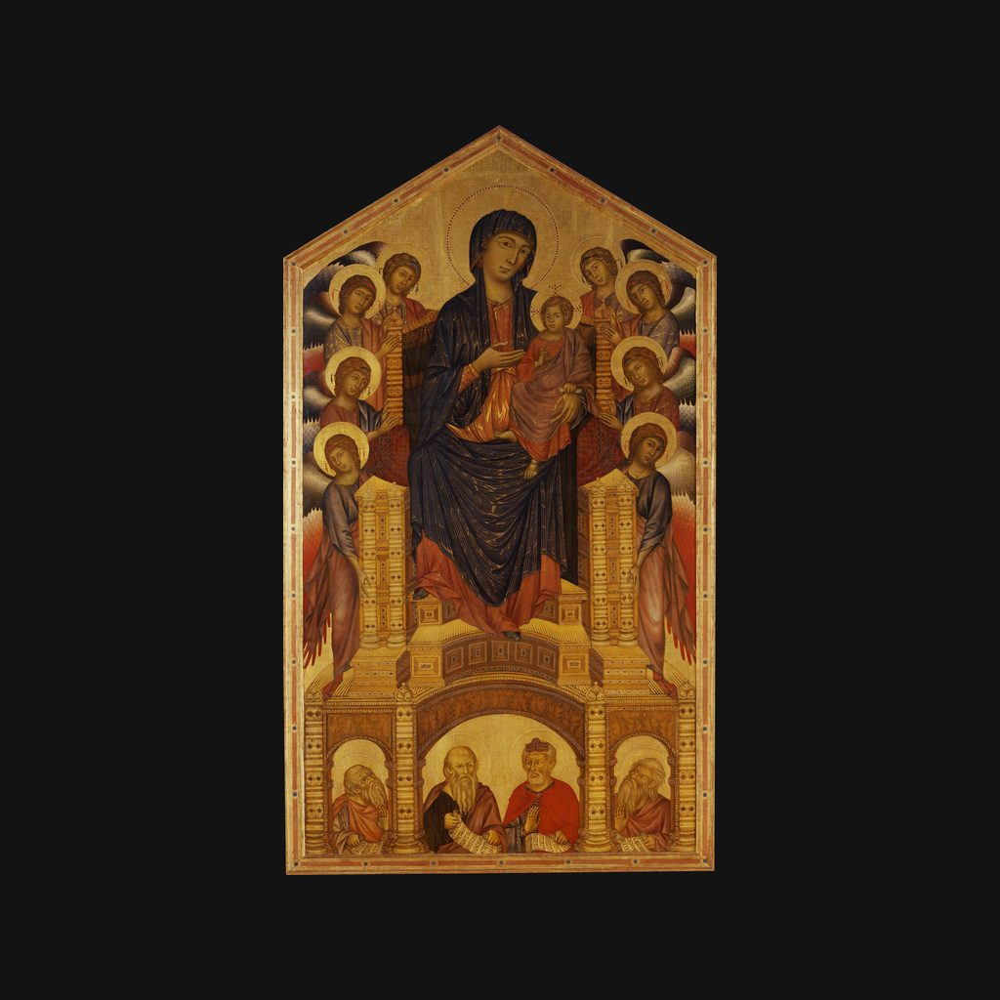

圣三一庄严圣母
契马布埃 · 约1290—1300年
Maestà di Santa Trinita
讲解节选
圣母用右手指向怀里的耶稣。周围是八位长着彩色翅膀的天使。
这幅画叫《圣三一庄严圣母》，作者是契马布埃，大约画于一二九零到一三零零年，木板蛋彩，金底，高将近四米。契马布埃是十三世纪佛罗伦萨最重要的画家之一，也在罗马、阿西西等地工作过。乌菲齐美术馆倾向于认为，这是他创作晚期的作品。
— 普通话讲稿 · Artvery
完整讲解约 3 分钟，在 Artvery App 里收听。粤语、台湾国语、内地普通话三种语音，馆内对准作品即可识别播放。
即将上架 App Store
App 即将上架，敬请期待。上架后免费下载，每座博物馆单独购买，一次购买永久使用。
作品信息
- 作者
- 契马布埃
- 年代
- 约1290—1300年
- 尺寸
- 384 × 223 厘米
- 所在
- 乌菲齐美术馆 · 中世纪与早期文艺复兴展厅
乌菲齐美术馆参观攻略：必看名作和路线 · 乌菲齐美术馆中文语音导览